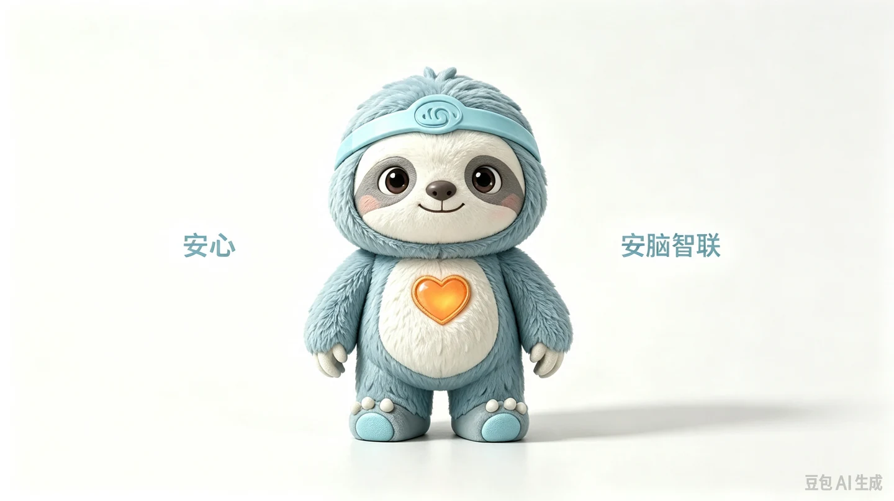

人工智能
ARTIFICIAL INTELLIGENCE
ABOUT REHABILITATION
上海安脑智联科技有限公司 · 脑卒中全周期智慧康复管理平台
BRAND MASCOT / ANXIN
由公司创始人设计的品牌吉祥物“安心”，以亲切的形象与胸前的爱心，传递安脑智联对康复的关怀。
我们希望让专业服务更有温度，让每一段康复旅程都有安心相伴。

OUR TEAM
安脑智联核心团队由来自三甲医院康复科、AI 实验室与医疗科技企业的成员组成，融合临床经验、算法研发和产品工程能力，是一支既懂医学、又懂技术的复合型团队。
团队汇聚人工智能、计算机视觉、大模型研发与游戏引擎架构等领域的专业力量，以技术与临床场景的融合，支撑“AI 评估＋游戏化训练＋专家数字分身”产品体系，连接院内与居家康复。
ARTIFICIAL INTELLIGENCE
COMPUTER VISION
LARGE MODEL DEVELOPMENT
GAME ENGINE ARCHITECTURE
OUR PURPOSE
以手机视觉训练连接居家康复，通过康复机器人与智能设备协同，让院内与居家服务持续衔接。
连接患者、专家与机构，围绕训练记录保持持续协作。
以真实康复需求为起点，让每个交互更清晰、更易理解。
从一次交流开始，找到适合您的产品与合作方式。